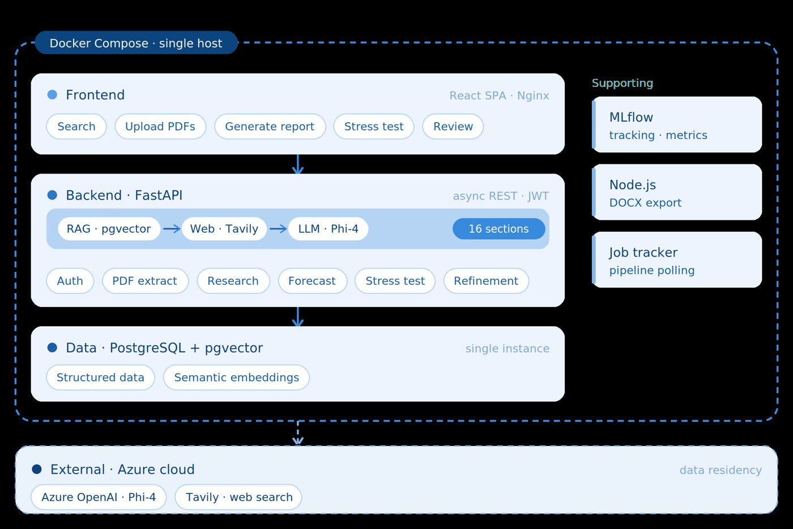

BFI Credit — Framework agentique IA pour la banque d'entreprise
Les analystes crédit passent ~70 % de leur temps à extraire, vérifier et mettre en forme les états financiers d'entreprises industrielles tunisiennes — des PDF hétérogènes qu'aucun outil standard ne traite bien.
- Pipeline d'extraction (PyMuPDF, Docling, Phi-4 via Azure OpenAI) : filtrage des pages, JSON structuré et validé stocké dans PostgreSQL, parallélisme borné et cache.
- Modèle de données & base vectorielle (PostgreSQL + pgvector, MiniLM multilingue) pour un chatbot RAG à similarité cosinus — faithfulness 1.0.
- Générateur de rapport en 16 sections avec scoring qualité, boucle de 6 tentatives et évaluation LLM-as-Judge, enrichi par une recherche web Tavily sur ~12 thèmes avec filtre de pertinence.
- Moteur de stress test (3 scénarios macro + personnalisés) et reverse stress test par bissection trouvant le point de rupture (~59 % de baisse du CA) en 413 ms ; prévision OLS avec intervalles de confiance en 482 ms.
- Architecture de production : refonte d'un script monolithique en FastAPI modulaire avec jobs asynchrones et JWT ; stack complète conteneurisée (Docker Compose) ; observabilité MLflow et Laminar ; cadre de KPI sur 6 modules.
~15 minrapport complet
1.0faithfulness
413 msstress test
482 msprévision